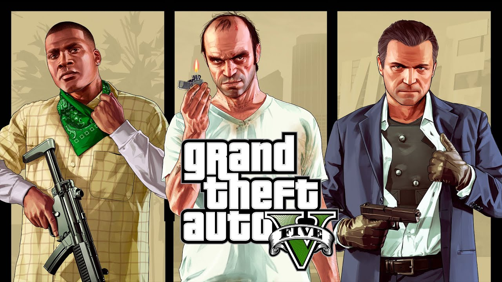
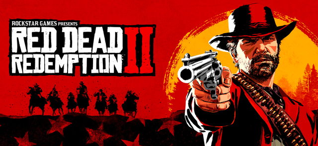
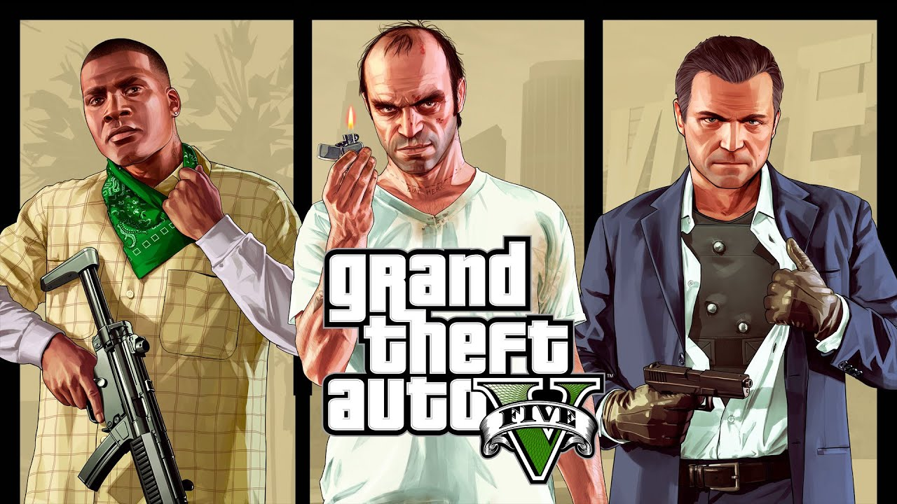
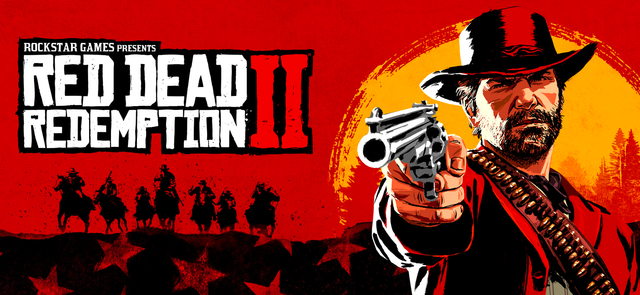
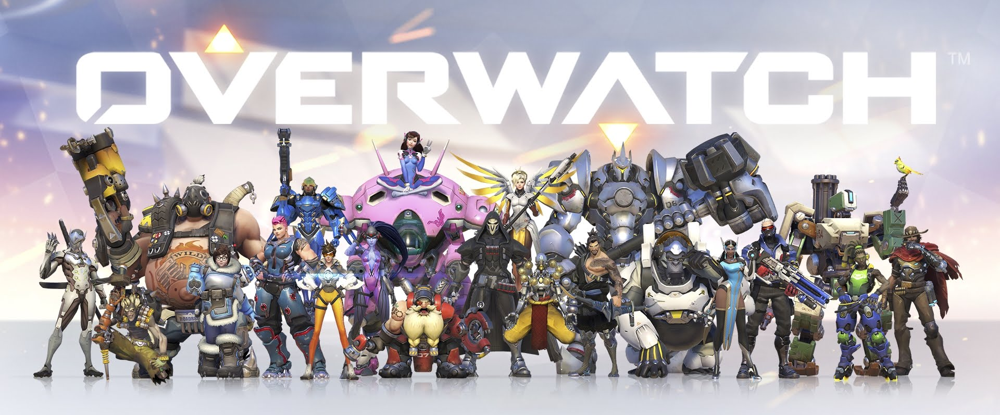
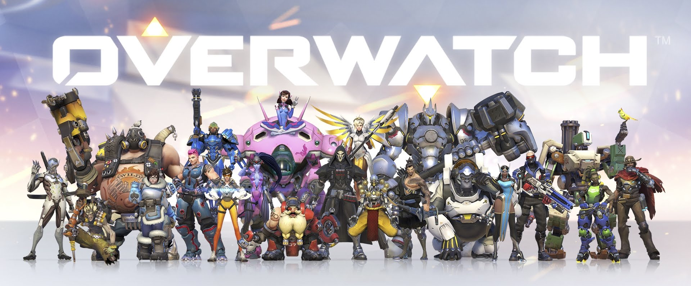
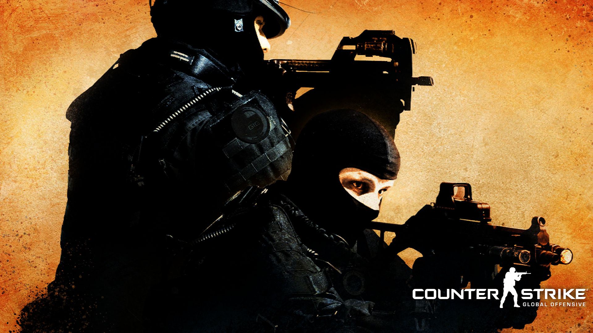
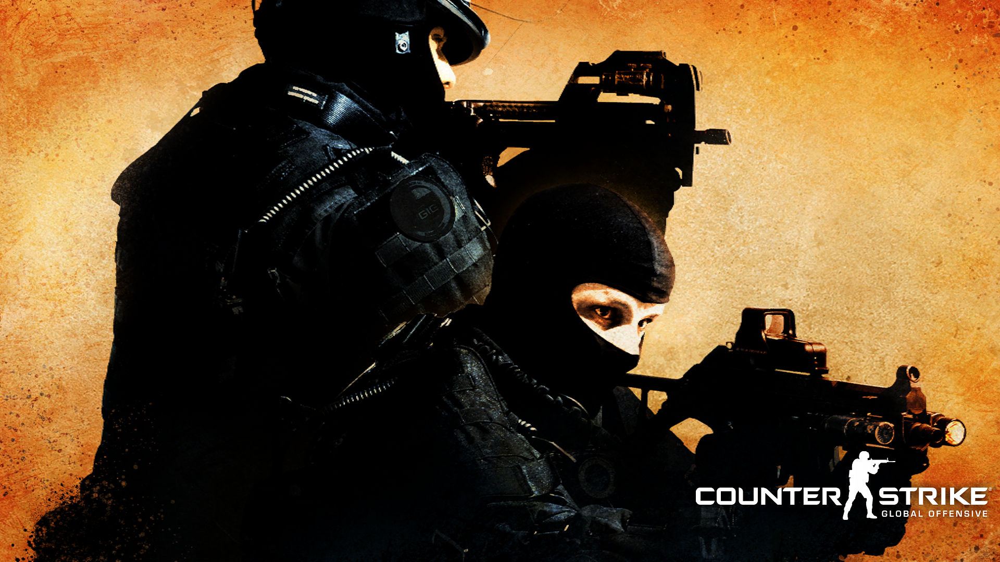

.
.
 



 

 



| Game | Release datum | Over de game zelf |
|---|---|---|
Super Mario Galaxy |
2010 | Misschien wel een oude game maar zeker een klassieker. Wij als gamestar vinden deze game ook heel goed voor zijn tijd En denken nog steeds dat hij zeker in de top 10 staat. Wij als gamestars geven deze game een 4.5/5 deze game is te spelen op de Nintendo Wii en de Nintendo switch |
| GTA V | 2013 | GTA V is een klassieker en wordt nog steeds veel gespeeld Deze oude single-player maar ook multiplayer shooter en story zit vol met verrassingen en leuke dingen die jij kunt doen Het spel is wel 18+ en moet alleen gespeeld worden door volwassenen Ondanks dat geven wij deze een 5/5 echt een top spel zeker een aanrader! de game is te spelen op de pc, playstation 3/4, xbox 360 en xbox one. |
| Red Dead Redemption II | 2018 | Red Dead Redemption II is een mooie singleplayer story game ook al eerder was hier een Red Dead Redemption I van en die werd goed opgevat! Hierbij Red Dead Redemption II die van de zelfde makers zijn van GTA V Wij geven als gamestars geven deze game een 4.5/5 en hoort zeker in dit lijstje! deze game is te spelen op de pc, playstation en xbox |
| Super Smash Bros. Ultimate | 2018 | Super smash bros is een platform fighting game met 80+ fighters (characters) waar je moet strijden tegen elkaar. Je kan offline en online spelen het is heel populair met 20 miljoen sales. wij geven deze game een 4.5/5 Deze game is te spelen op de nintendo switch |
| Overwatch | 2016 | Overwatch is een game met heroes die allemaal unieke vaardigheden hebben. Het is een online multiplayer team battle game. Het spel is overal te spelen en is cross play dus je kan spelen met verschillende platformen. het is te spelen op de nintendo switch, pc, ps4 en xbox one. Wij als gamestars spelen het spel ook en hebben er niets op aan te merken 5/5! |
| Minecraft | 2011 | Minecraft wie kent het niet een populair blokken spel waarin je moet overleven Je kan samen of alleen spelen en het doel in het spel is aan iedere speler anders en dat maakt deze game zo leuk! Deze game is zeker weten een 5/5 en is te spelen op bijna ELK platform Nintendo switch, wii u, 3ds, ps3, ps4, xbox 360, xbox one, rasberry pi en op de telefoon. |
| CS:GO | 2012 | Deze multiplayer shooter is heel populair met een tactische 5v5 gameplay is dit een van de beste shooter games De game blijft maar updates krijgen en stijgt alleen maar in populariteit. Wij geven deze game 4.5/5. Deze game is alleen te spelen op de pc. |
| Half-Life | 1998 | Half-life is een heel oud spel maar zeker geen slecht spel daarom. Het is een van de best bekeken games en was vroeger ook goed bekeken in Half-Life kruipen de spelers in de rol van Dr. Gordon Freeman, een wetenschapper die zich uit een ondergronds laboratorium moet zien te vechten nadat een teleport-experiment volledig uit de hand gelopen is. Wij als game stars vinden deze game een 4/5 en is zeker een aanraden. Het spel is te spelen op de pc |
| The legend of Zelda: Ocarina of time | 1998 | Ocarina of time is een revolutionaire game geweest die samen met wat andere titles een van de eerste 3D games waren en hierbij is de game ook het best op de populaire review site (metacritics) gerate als de beste game ooit! Wij als gamestars geven deze game een 5/5 en zeker een aanrader hij is te spelen op de Nintendo 64 en op de nintendo switch. |
| The legend of Zelda: Breath of the Wild | 2017 | De allereerste zelda game dat open-world is dat houdt in dat je kan gaan en staan waar je wilt en dat maakt deze game zo mooi. Het is een verfrissende game en zeker rustgevend met mooie aspecten zoals bomen omhakken alsof je daadwerkelijk aan het overleven bent! Deze game is single player en zeker weten aan te raden als je een Nintendo switch hebt ook is deze game te spelen op de wii u en wij geven deze game een 5/5! |